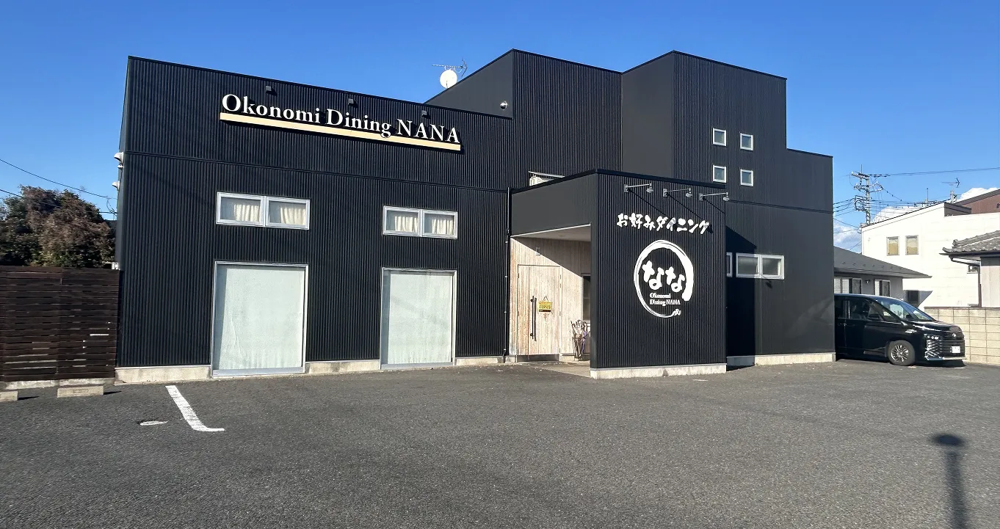
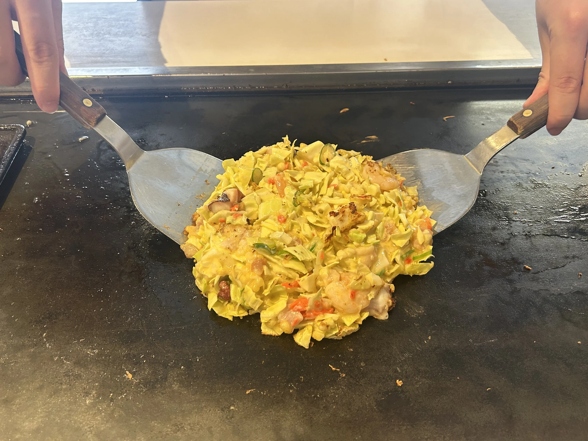
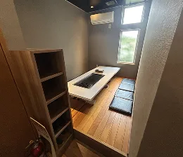

ご家族やご友人同士でのご利用にぴったりなテーブル席。鉄板を囲みながら、焼きたてのお好み焼きをゆっくりお楽しみいただけます。落ち着いた雰囲気の中で、会話とお食事を気兼ねなく楽しめるお席です。
足を伸ばしてくつろげる座敷席は、小さなお子様連れのご家族や、ゆったり過ごしたい方におすすめ。グループでのお食事や、少し長居したい日にも最適です。肩ひじ張らず、くつろぎの時間をお過ごしください。
Tel:027-266-8484
ご予約・お問い合わせ


群馬県前橋市小屋原町にて経営している「お好み焼きダイニングナナ」。地域の皆さまに支えられながら、この場所でお店を続けてまいりました。当店では、お好み焼きを中心に、鉄板で仕上げるシンプルな料理を通して、肩肘張らずに楽しめる時間をご提供しています。素材の味を大切にしながら、一枚一枚丁寧に焼き上げ、また食べたいと思っていただける味を目指しています。事前にご相談いただければ、お席やご利用シーンに応じたご対応も可能です。ご家族やご友人とのお食事、お仕事帰りの一杯にも、どうぞお気軽にお立ち寄りください。鉄板を囲みながら、気取らないひとときをお楽しみいただければ幸いです。


ご家族やご友人同士でのご利用にぴったりなテーブル席。鉄板を囲みながら、焼きたてのお好み焼きをゆっくりお楽しみいただけます。落ち着いた雰囲気の中で、会話とお食事を気兼ねなく楽しめるお席です。
足を伸ばしてくつろげる座敷席は、小さなお子様連れのご家族や、ゆったり過ごしたい方におすすめ。グループでのお食事や、少し長居したい日にも最適です。肩ひじ張らず、くつろぎの時間をお過ごしください。
Tel:027-266-8484
ホームページを見たとお伝えいただけるとスムーズです。
キャンセルは前日までにお願いします。
店名
お好み焼きダイニングナナ
ご予約・お問い合わせ
027-266-8484
住所
〒379-2121 群馬県前橋市小屋原町1048-1
営業時間
【昼】11:30～14:00 【夜】17:30～22:00
定休日
月曜日
駐車場
あり
総席数
44席
お支払方法
現金のみ